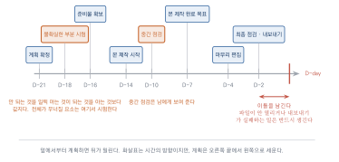
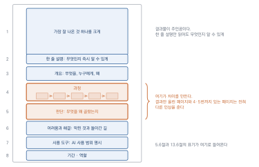

기획·제작·발표·포트폴리오
이 장을 마치면
- 자기 관심에서 출발해 실현 가능한 프로젝트 주제를 정할 수 있다.
- 제작 일정과 도구 사용 계획을 세울 수 있다.
- 작업 과정을 기록하고 그 기록을 결과물의 일부로 만들 수 있다.
- 작업을 효과적으로 발표할 수 있다.
- 결과물을 포트폴리오로 정리해 공개할 수 있다.
마지막 장은 자유 주제 프로젝트를 위한 안내다. 앞의 열두 장에서 익힌 것 가운데 필요한 것을 골라 쓰면 된다. 여기서 중요한 것은 새로운 기술을 배우는 것이 아니라, 시작한 것을 끝내고 남기는 일이다. 이 과정을 한 번 제대로 겪어 두면 이후의 작업은 그 반복이 된다.
13.1 주제 정하기
기말 프로젝트는 자유 주제다. 자유롭다는 것이 오히려 어려울 수 있다. 이 절에서는 고르는 기준을 정리한다.
좋은 주제의 세 조건
1. 내가 궁금한 것. 두 주 넘게 붙잡고 있어야 하므로, 관심이 없으면 중간에 힘이 빠진다. 잘 팔릴 것 같은 것보다 내가 알고 싶은 것이 낫다.
2. 규모가 통제되는 것. 남은 시간과 크레딧 안에서 끝낼 수 있어야 한다. 8.3절에서 분량을 지키는 법을 다뤘고, 9장과 11장에서 실제로 겪었을 것이다.
3. 결과물의 형태가 그려지는 것. 무엇을 만들 것인가에 한 문장으로 답할 수 있어야 한다. AI에 대해 뭔가 해 보겠다는 주제가 아니다.
셋 중 하나라도 빠지면 대개 실패한다. 특히 두 번째가 학기 과제에서 가장 많이 걸린다. 1번과 3번이 갖춰졌는데 규모가 크다면, 같은 주제의 작은 조각을 잘라 내는 것이 정답이다.
주제 유형
방향을 잡는 데 도움이 되도록 유형을 나눠 둔다. 각 유형마다 앞의 어느 장이 중심이 되는지도 표시했다.
| 유형 | 예 | 중심 장 |
|---|---|---|
| 홍보물 | 동네 가게, 동아리, 지역 행사의 홍보 콘텐츠 | 6, 9, 11 |
| 창작 단편 | 짧은 그림책, 웹툰, 시집, 뮤직비디오 | 6–8, 10 |
| 실험적 작업 | 도구의 한계를 일부러 드러내는 작업 | 3, 7 |
| 사회적 메시지 | 알리고 싶은 문제를 다룬 콘텐츠 | 5, 8, 9 |
| 자기 브랜딩 | 자기 작업을 소개하는 사이트·영상 | 11, 12 |
| 도구 만들기 | 특정 목적의 커스텀 어시스턴트 | 12 |
표 13.1의 세 번째 유형은 설명이 필요하다. 이 책은 도구를 잘 쓰는 법을 가르쳤지만, 예술에서는 도구가 실패하는 지점이 오히려 재료가 되기도 한다. 인공지능이 손을 못 그린다는 사실, 같은 프롬프트에 매번 다른 답을 낸다는 사실, 편향이 드러난다는 사실 자체를 작품의 주제로 삼는 작업이 실제로 많다. 3.4절의 논의에 자기 답을 내놓는 방식이기도 하다.
주제를 좁히는 질문
큰 방향이 정해졌다면 다음 질문으로 좁힌다.
1. 누구에게 보여 줄 것인가? (구체적인 한 사람)
2. 그 사람이 이걸 보고 무엇을 느끼거나 하기를 바라는가?
3. 결과물은 어떤 형태인가? (매체, 분량, 길이)
4. 이 중 내가 이미 할 줄 아는 것은? 새로 배워야 하는 것은?
5. 새로 배워야 하는 것이 두 가지를 넘는가?
→ 넘는다면 범위를 줄인다5번이 현실적인 안전장치다. 남은 기간에 새 기술을 두 가지 넘게 익히면서 작품까지 완성하기는 어렵다.
AI에게 주제를 정하게 하지 않는다
1.4절에서 의도는 사람의 몫이라고 했다. 이 원칙이 가장 시험받는 순간이 지금이다. 막막하니까 좋은 프로젝트 주제 스무 개 추천해 줘라고 묻고 싶어진다.
그러면 어떻게 되는지는 3.1절에서 이미 배웠다. 가장 평균적인 주제들이 나온다. 그리고 그것은 대체로 내가 하고 싶은 것이 아니다.
다만 AI를 쓸 자리가 있기는 하다. 주제를 정한 뒤에 쓴다.
내가 정한 기말 프로젝트 주제야.
주제: ____________________
대상: ____________________
결과물 형태: ____________________
남은 기간: 3주 / 주당 작업 가능 시간: 약 6시간
이 계획에서 다음을 지적해 줘. 대안을 제시하지는 말고 문제만 짚어 줘.
1. 남은 시간 안에 끝내기 어려워 보이는 부분
2. 내가 미처 생각하지 않았을 것 같은 준비물
3. 이 주제로 만들면 흔한 결과가 나올 위험이 있는 지점대안을 제시하지 말라는 지시가 핵심이다. 8.3절에서 구조를 맡기지 말라고 한 것과 같은 이유다.
9장의 경험을 반영하기
실습 9-8에서 세 질문에 답해 두었을 것이다. 지금 그 답을 다시 읽자.
- 계획에 비해 시간이 얼마나 더 들었는가
- 어느 단계에서 가장 막혔는가
- 다시 한다면 무엇을 먼저 하겠는가
첫 번째 답이 특히 중요하다. 웹툰 프로젝트에서 계획의 두 배가 걸렸다면, 이번 계획도 그만큼 여유를 두어야 한다. 자기 예측이 얼마나 빗나가는지를 아는 것이 두 번째 프로젝트의 가장 큰 자산이다.
주제를 못 정하겠다면
그래도 막막하다면 다음 순서로 해 보자.
- 이번 학기에 만든 것 중 가장 아쉬웠던 것을 하나 고른다
- 왜 아쉬웠는지 한 문장으로 적는다
- 그것을 제대로 해내는 것을 이번 프로젝트로 삼는다
새로운 것을 찾는 것보다 확실하고, 이미 한 번 해 봤으므로 위험도 적다. 그리고 같은 것을 두 번째 만들 때 실력이 가장 많이 는다.
13.2 제작 계획과 일정
주제가 정해졌으면 계획을 세운다. 이 절은 짧지만, 여기에 한 시간을 쓰면 나중에 며칠을 아낀다.
역순으로 짠다
앞에서부터 계획하면 대개 뒤가 밀린다. 제출일에서 거꾸로 짜는 편이 낫다.
D-day 제출·발표
D-2일 최종 점검, 내보내기, 표기 확인
D-4일 마무리 편집 (글자, 색보정, 오디오)
D-7일 본 제작 완료 목표
D-10일 본 제작 중반 점검
D-14일 본 제작 시작
D-16일 준비물 확보 (캐릭터 시트, 음악, 소재)
D-18일 가장 불확실한 부분 시험
D-21일 계획 확정
그림 13.1에서 색이 다른 두 칸이 이 계획의 핵심이다. 하나는 안 될 것을 미리 알아내는 자리이고, 하나는 방향이 어긋났는지 확인하는 자리다.
D-2일에 이틀을 남겨 두는 것이 요령이다. 마지막 날 파일이 안 열리거나 내보내기가 실패하는 일은 반드시 생긴다.
불확실한 것부터
9.5절에서 어려운 컷부터, 11.2절에서 위험도 높은 클립부터라고 했다. 프로젝트 전체에도 같은 원칙이 적용된다.
계획을 세울 때 이게 될까 싶은 부분을 찾아 표시하고, 그것을 가장 먼저 시험한다.
이 프로젝트에서 가장 불확실한 것: ____________________
안 되면 어떻게 되는가: □ 계획을 조금 바꾸면 됨
□ 프로젝트 전체가 무너짐
전체가 무너지는 경우라면 → D-18일 안에 반드시 시험한다
시험 결과: □ 된다 □ 안 된다 □ 조건부로 된다
안 될 경우의 대안: ____________________안 되는 것을 일찍 아는 것이 되는 것을 아는 것보다 값지다. 마지막 주에 알게 되면 대안을 세울 시간이 없다.
크레딧 예산
11.2절의 계획표를 프로젝트 전체로 확장한다.
필요 추정 확보 가능 비고
이미지 생성 ______회 ______회
영상 생성 ______회 ______회
음악 생성 ______회 ______회
음성 합성 ______자 ______자
부족한 항목: ____________________
대안: □ 다른 무료 도구 병행
□ 정지 이미지·기성 음원으로 대체
□ 분량 축소
□ 유료 전환 (비용: ______원)유료 전환을 선택지에 넣어 두는 것은 나쁘지 않다. 다만 5.2절에서 말했듯 유료로 전환한 뒤에 만든 것만 상업적 이용이 되는 경우가 있으므로, 전환할 계획이라면 작업 시작 전에 하는 편이 낫다.
작업 시간 산정
가장 자주 빗나가는 부분이다. 두 가지 요령이 있다.
9장의 실측을 쓴다. 실습 9-8에서 계획 대비 실제 시간을 기록해 두었다. 그 비율을 이번 계획에 곱한다. 두 배가 걸렸다면 이번에도 두 배로 잡는다.
단위 작업으로 나눈다. 영상 만들기가 아니라 클립 8개 생성으로 적는다. 클립 하나에 20분이 걸렸다면 8개는 2–3시간이다. 이렇게 쪼개면 훨씬 정확해진다.
생성 시간과 대기 시간을 구분하자. 영상 생성은 버튼을 누르고 몇 분씩 기다린다. 그 시간에 다른 일을 할 수 있으므로, 대기가 긴 작업을 먼저 걸어 두고 그동안 다른 작업을 하는 식으로 배치하면 전체 시간이 크게 줄어든다.
중간 점검
혼자 하는 작업에서는 방향이 어긋나도 모른다. 점검 시점을 미리 정해 둔다.
□ 원래 정한 메시지에서 벗어나지 않았는가
□ 남은 시간에 끝낼 수 있는 분량인가
□ 여기서 줄여야 할 것이 있는가
□ 다른 사람에게 보여 줬을 때 의도가 전달되는가
줄이기로 한 것: ____________________네 번째 항목을 위해 반드시 중간에 남에게 보여 준다. 조원, 친구, 누구든 좋다. 혼자 보면 보이지 않는 것이 있다.
계획서 한 장
지금까지의 것을 한 장으로 정리한다. 12주차 발표에서 제출할 것이다.
[주제] ____________________
[대상] ____________________
[결과물] 형태·분량: ____________________
[메시지] 한 문장: ____________________
[일정] 역순 계획 (위 양식)
[예산] 크레딧 예산표
[위험] 가장 불확실한 것과 대안
[점검] 중간 점검일: ____월 ____일
[이번에 새로 배워야 하는 것]
1. ____________________
2. ____________________
(두 개를 넘지 않는다)13.3 제작 중의 기록
4.5절에서 기록의 중요성을 말했고, 9장과 11장에서 실제로 기록해 보았다. 이 절에서는 그 기록이 왜 결과물만큼 중요한지를 다룬다.
결과만 있는 포트폴리오
인공지능 도구가 널리 쓰이면서 생긴 문제가 있다. 잘 만든 결과물이 흔해졌다는 것이다.
예전에는 완성도 높은 이미지 하나가 곧 실력의 증거였다. 지금은 아니다. 누구나 몇 번의 시도로 그럴듯한 이미지를 얻을 수 있으므로, 결과물만으로는 이 사람이 무엇을 할 줄 아는지 알 수 없다.
그래서 보는 사람의 질문이 바뀌었다.
이걸 만들 수 있느냐가 아니라, 왜 이걸 만들었고 어떻게 여기에 도달했느냐.
과정이 보이는 포트폴리오가 차별점이 되는 이유가 여기 있다. 결과는 흔해졌지만 판단의 근거는 여전히 사람마다 다르다. 그리고 판단은 기록에만 남는다.
무엇을 기록하는가
네 가지다. 앞 장들에서 이미 해 온 것들이다.
1. 프롬프트와 설정. 무엇을 어떻게 지시했는지. 4.5절의 양식.
2. 버린 것. 만들었지만 쓰지 않은 시안들. 이것이 가장 값지다.
3. 방향을 바꾼 지점. 언제 무엇 때문에 계획을 바꿨는지.
4. 사람이 한 작업. 무엇을 고르고, 고치고, 다시 그렸는지. 5.2절의 권리 문제와도 이어진다.
버린 것을 남기는 이유
2번이 왜 중요할까. 버린 것이 곧 판단의 증거이기 때문이다.
시안 서른 장 중 세 장을 골랐다면, 나머지 스물일곱 장은 내가 이런 기준으로 판단했다는 기록이다. 1.4절에서 선택이 새로운 병목이라고 했고, 실습 1-4에서 버린 이유를 적으라고 한 것이 여기로 이어진다.
채택: cut03_v2.png
버린 것과 이유
v1 인물이 정면을 봐서 연출 사진 같음
v3 색이 예쁘지만 앞 컷과 톤이 안 맞음
v4 구도는 좋은데 말풍선 자리가 없음
v5 손이 이상함 (인페인팅 시도했으나 실패)
판단 기준(정리하면):
1. 시선 처리 2. 앞뒤 컷과의 톤 3. 글자 자리마지막 줄이 결과물이다. 개별 판단을 모으면 자기 기준이 드러난다. 이것이 발표에서 말할 내용이고, 포트폴리오에 쓸 내용이다.
기록 양식
프로젝트 전체를 담는 형식이다. 매일 조금씩 채운다.
[날짜] ____________ [작업 시간] ____시간
오늘 한 것:
____________________
막힌 것과 해결:
____________________
버린 것:
____________________ (이유: ____________)
방향을 바꾼 것:
무엇을: ____________ 왜: ____________
내일 할 것:
____________________하루 5분이면 채운다. 그리고 3주 뒤에 이 일지가 발표 자료의 절반이 된다.
시각 자료로 남기기
글로만 쓰지 말고 화면을 남긴다.
- 중간 단계의 이미지를 단계별로 한 장씩 (6.2절의 파일 이름 규칙)
- 손으로 그린 콘티와 스케치 사진
- 시안을 늘어놓은 화면 캡처
- 편집 도구의 레이어 구조 캡처
두 번째 항목이 특히 강력하다. 손으로 그린 것이 있다는 사실이 7.2절에서 말한 자기 기여를 가장 확실하게 보여 준다.
자동으로 남기기
12.5절에서 만든 작업 기록 자동화가 여기서 쓰인다. 파일이 쌓일 때마다 자동으로 목록이 만들어지면, 나중에 언제 무엇을 만들었는지를 되짚을 수 있다.
만들지 않았더라도 최소한 이것은 하자. 작업 폴더를 지우지 않는다. 중간 파일과 버린 시안을 지우고 최종본만 남기는 습관은 포트폴리오를 만들 때 후회하게 된다.
반대로 정리하지 않아 못 쓰는 경우도 많다. 파일 이름이 무제1.png, 다운로드(3).png뿐이면 남아 있어도 소용이 없다. 6.2절의 이름 규칙을 지키자. 나중에 정리하려 하면 그때는 무엇이 무엇인지 기억나지 않는다.
13.4 발표하기
15주차 기말 발표를 준비한다. 만든 것을 보여 주는 자리이자, 무엇을 배웠는지 말하는 자리다.
구성
제한 시간이 5–7분이라고 가정한다. 다음 순서가 무난하다.
1분 무엇을, 왜 만들었는가 주제와 의도
1분 결과물 보여 주기 (영상이면 그냥 튼다)
2분 어떻게 만들었는가 과정, 도구, 판단
2분 무엇이 어려웠고 어떻게 풀었나 ← 가장 중요
1분 무엇을 배웠는가 다음에 할 것네 번째 항목에 가장 많은 시간을 쓴다. 잘된 것만 말하는 발표는 배울 것이 없고, 듣는 사람도 기억하지 못한다. 무엇이 안 되었고 어떻게 돌아갔는지가 실제로 유용한 정보다.
과정을 보여 주는 법
13.3절에서 남긴 기록이 여기서 쓰인다. 말로 설명하지 말고 보여 준다.
- 시안 서른 장을 한 화면에 늘어놓고 고른 세 장을 표시
- 손으로 그린 콘티와 최종 결과를 나란히
- 처음 계획한 것과 실제로 나온 것을 나란히
- 실패한 시도를 그냥 보여 준다
마지막 항목을 두려워하지 말자. 실패한 시안을 보여 주는 발표가 훨씬 신뢰를 얻는다. 잘된 결과만 있으면 우연히 나온 것인지 판단해서 만든 것인지 알 수 없기 때문이다.
발표 자료
슬라이드를 만든다면 원칙은 단순하다.
- 글자를 줄인다. 슬라이드는 읽는 것이 아니라 보는 것이다
- 한 장에 한 가지. 여러 이야기를 한 장에 넣지 않는다
- 결과물을 크게. 이미지와 영상이 주인공이다
- 비교를 활용한다. 전후, 계획과 실제, 채택과 탈락
9.6절과 11.7절에서 익힌 것과 같은 이야기다. 읽히게 만드는 것이 우선이다.
시간을 지킨다
발표에서 가장 흔한 문제는 시간 초과다. 대책은 하나뿐이다. 미리 소리 내어 연습한다.
머릿속으로 넘기면 실제의 절반 시간이 걸린다. 실제로 말해 보면 예상보다 훨씬 길다. 한 번은 시계를 보며 끝까지 말해 본다.
영상을 상영한다면 그 시간도 발표 시간에 포함된다. 1분짜리 영상을 두 번 틀면 그것만으로 2분이다. 영상은 한 번만 틀고, 필요하면 일부만 보여 준다.
질문에 답하기
질문은 공격이 아니라 관심이다. 몇 가지 요령이 있다.
모르면 모른다고 한다. 그건 확인해 보지 않았습니다가 지어내는 것보다 낫다. 3.1절에서 배운 환각의 인간판을 하지 말자.
판단의 근거를 말한다. 왜 이 색을 썼나요라는 질문에 그냥 예뻐서요보다 어두운 톤이 주제와 맞다고 봤고, 밝은 버전과 비교해서 골랐습니다가 낫다. 13.3절의 기록이 있으면 이 답이 쉽다.
AI를 얼마나 썼는지 솔직하게. 이 질문은 반드시 나온다. 감추면 신뢰를 잃고, 정확히 말하면 오히려 인정받는다. 5.6절과 13.6절의 표기 원칙이 여기서 말로 나온다.
아래는 내 기말 프로젝트 발표 내용이야.
[발표 내용 요약을 여기에]
이 발표를 듣고 나올 만한 질문을 10개 뽑아 줘.
그중 내가 답하기 어려울 것 같은 질문을 3개 표시해 줘.
답은 하지 말고 질문만 줘.8.2절의 질문은 기계가, 답은 사람이가 여기서도 통한다.
동료 평가
발표를 듣는 쪽도 일이 있다. 다음 기준으로 평가한다.
발표자: ____________ 주제: ____________________
1. 의도가 분명히 전달되었는가 (1~5) ____
2. 결과물이 의도를 실현했는가 (1~5) ____
3. 과정과 판단이 드러났는가 (1~5) ____
4. 어려움과 해결이 구체적이었는가 (1~5) ____
5. AI 사용 범위가 투명하게 밝혀졌는가 (1~5) ____
가장 인상적이었던 점 (한 문장):
____________________
내 작업에 가져가고 싶은 것:
____________________
궁금한 것 하나:
____________________마지막 두 항목이 점수보다 중요하다. 평가는 등급을 매기는 것이 아니라 서로 배우는 자리다. 5번 항목을 넣어 둔 이유는, 투명하게 밝히는 것이 감점이 아니라 가점이라는 문화를 만들기 위해서다.
발표 후
받은 질문과 평가를 정리해 둔다. 13.5절에서 포트폴리오를 만들 때 그대로 쓸 수 있다.
- 반복해서 나온 질문 → 작품 설명에 미리 답해 둘 것
- 잘 전달되지 않은 부분 → 설명을 보강할 것
- 예상 못 한 반응 → 작품을 다시 볼 실마리
13.5 포트폴리오로 남기기
학기가 끝나면 만든 것들이 폴더에 묻힌다. 그것을 꺼내 보이는 형태로 만드는 것이 이 절의 일이다.
어디에 올릴까
무료로 쓸 수 있는 수단들이다. 하나만 골라 시작하면 된다.
| 수단 | 강점 | 약점 |
|---|---|---|
| 노션 | 만들기 쉽다. 과정을 길게 쓰기 좋다 | 디자인 자유도가 낮다 |
| 비핸스 | 디자인 분야에서 통용된다 | 형식이 정해져 있다 |
| 인스타그램 | 접근성이 높다 | 과정을 보여 주기 어렵다 |
| 개인 사이트 | 완전히 자유롭다 | 만드는 데 시간이 든다 |
| 깃허브 페이지 | 무료·영구적 | 기술적 진입 장벽 |
처음에는 노션을 권한다. 만들기 쉽고, 13.3절에서 남긴 과정 기록을 그대로 옮기기 좋으며, 나중에 다른 곳으로 옮길 때 내용이 이미 정리되어 있다. 완벽한 사이트를 만들려다 아무것도 안 올리는 것이 가장 흔한 실패다.
한 작품의 구성
작품 하나를 소개하는 페이지의 구성이다.
1. 결과물 가장 잘 나온 것 하나를 크게
2. 한 줄 설명 무엇인지 즉시 알 수 있게
3. 개요 무엇을, 누구에게, 왜 (2~3문장)
4. 과정 시안 → 선별 → 수정 → 완성 (이미지로)
5. 판단 무엇을 왜 골랐는지
6. 어려움과 해결 막힌 것과 돌아간 길
7. 사용 도구 AI 사용 범위 명시 (13.6절)
8. 기간·역할 혼자인지 팀인지, 무엇을 맡았는지
4번과 5번이 13.3절에서 말한 차별점이다. 그림 13.2에서 그 두 칸만 색이 다르다. 결과만 올린 페이지와 여기까지 있는 페이지는 전혀 다른 인상을 준다.
작품 설명 쓰는 법
가장 어려워하는 부분이다. 원칙이 있다.
작품이 아니라 판단을 쓴다. 따뜻한 색감으로 표현했다가 아니라 차가운 색으로 먼저 시도했으나 주제와 맞지 않아 따뜻한 쪽으로 바꿨다.
형용사를 줄인다. 8.6절의 징후가 작품 설명에서도 그대로 나타난다. 아름답고 감성적인보다 구체적인 사실이 낫다.
길지 않게. 결과물이 주인공이다. 설명은 읽지 않을 수도 있다는 전제로, 한 줄 설명만 읽어도 무엇인지 알 수 있게 만든다.
아래는 내 작품 설명 초안이야.
[초안을 여기에]
다음만 지적해 줘. 고쳐 주지는 마.
1. 구체적 사실 없이 형용사만 있는 문장
2. 판단이 아니라 결과만 서술한 문장
3. 없어도 되는 문장AI 사용을 밝히는 것이 강점이 되는 이유
5.6절에서 밝히라고 했고, 13.6절에서 방법을 다룬다. 여기서는 왜 그것이 유리한지만 짚는다.
13.3절에서 말했듯 결과물이 흔해졌다. 그래서 보는 사람은 이 사람이 무엇을 판단했는가를 알고 싶어 한다. AI 사용을 밝히면서 그 안에서 자기가 한 일을 구체적으로 적으면, 바로 그 질문에 답하는 것이 된다.
[감추는 설명]
"따뜻한 색감의 일러스트 연작"
[드러내는 설명]
"콘티를 직접 그린 뒤 AI로 변주하여 32장을 생성.
그중 6장을 선별해 합성·색보정했습니다.
캐릭터 일관성 문제로 클로즈업을 줄이고
뒷모습과 사물 컷을 늘리는 방향으로 연출을 바꿨습니다."두 번째가 훨씬 많은 것을 말한다. 도구를 안다는 것, 한계를 안다는 것, 그 한계를 연출로 바꿨다는 것이 모두 드러난다.
무엇을 올리고 무엇을 뺄까
전부 올릴 필요는 없다. 기준이 있다.
- 완성된 것만. 미완성작은 스스로에게만 의미 있다
- 다섯 개 이하로 시작. 많은 것보다 좋은 것이 낫다
- 서로 다른 것을 섞는다. 비슷한 작업만 다섯 개면 하나만 있는 것과 같다
- 권리가 정리된 것만. 5.6절의 점검을 통과한 것 (13.6절)
계속 채워 나가기
학기가 끝나면 대부분 여기서 멈춘다. 그러지 않으려면 습관이 필요하다.
- 작업이 끝나면 그 주 안에 올린다. 미루면 안 한다
- 올리는 데 30분을 넘기지 않는다. 13.3절의 기록이 있으면 충분하다
- 한 달에 하나만 올려도 일 년이면 열두 개다
포트폴리오는 완성하는 것이 아니라 계속 쌓는 것이다.
13.6 크레딧과 공개 윤리
이 책의 마지막 절이다. 5장에서 배운 것을 실제 공개 상황에 적용하고, 학기 전체를 정리한다.
무엇을 밝히는가
크레딧에 들어갈 항목이다. 작업 규모에 따라 줄이거나 늘린다.
[사람]
기획·연출: ____________
글: ____________
그림·편집: ____________
(팀이라면 각자 맡은 것을 명확히)
[도구]
이미지 생성: ____________ (서비스명)
글: ____________
음악: ____________
영상: ____________
편집: ____________
[가져다 쓴 것]
서체: ____________ (이름, 라이선스)
기성 음원: ____________ (곡명, 출처, 라이선스)
참조 자료: ____________
[AI 사용 범위]
____________________ (13.5절의 '드러내는 설명' 형식)가져다 쓴 것 항목을 빠뜨리지 말자. 서체와 음원의 표기 의무는 AI 사용 표기보다 법적으로 더 명확한 의무다. 무료로 쓸 수 있다는 것이 표기하지 않아도 된다는 뜻은 아니다.
팀 작업의 크레딧
혼자가 아니라면 각자 무엇을 했는지를 적는다. 뭉뚱그리면 나중에 문제가 된다.
- 공동 제작만 적지 말고 역할을 나눈다
- 아이디어를 낸 사람과 실행한 사람을 구분한다
- 프롬프트를 만든 사람도 기여자다
- 순서에 의미가 있다면 미리 합의한다
참조한 것 밝히기
5.3절에서 작가 이름을 프롬프트에 넣지 말라고 했다. 그렇다면 영향받은 것은 어떻게 밝힐까.
영감의 출처는 밝혀도 좋다. OO 작가의 색 사용에서 영향을 받았다고 적는 것은 정직한 태도이고, 오히려 존중의 표시다. 다만 이것과 프롬프트에 이름을 넣어 화풍을 복제하는 것은 전혀 다른 일이라는 점을 구분하자.
| 괜찮다 | 문제가 된다 |
|---|---|
| "OO의 구성 방식을 참고했습니다" | 프롬프트에 이름을 넣어 복제 |
| "OO 사조의 색채를 연구했습니다" | 특정 작품과 거의 같게 만들기 |
| "이 작업은 OO에 대한 응답입니다" | 참조 사실을 감추기 |
공개 전 최종 점검
부록 C의 전체 목록을 여기서 다시 요약한다. 학기의 모든 점검이 여기로 모인다.
[권리]
□ 사용한 도구의 약관에서 이 용도가 허용되는가
□ 무료 플랜의 상업 이용 제한에 걸리지 않는가 (5.2, 10.6)
□ 프롬프트에 실존 작가·아티스트 이름이 없는가 (5.3)
□ 실존 인물의 얼굴·목소리가 없는가 (5.4, 11.6)
□ 특정 작품과 지나치게 닮지 않았는가 (2.5)
□ 서체·음원의 라이선스를 확인하고 표기했는가
□ 상표·로고가 화면에 들어 있지 않은가
[내용]
□ 등장 인물 구성에 치우침이 없는가 (5.5)
□ 사실을 다룬 부분을 검증했는가 (3.1)
□ 문화적 요소를 맥락 없이 쓰지 않았는가 (5.5)
[표기]
□ AI 사용 범위를 밝혔는가
□ 가져다 쓴 것을 모두 표기했는가
□ 팀원의 역할을 명확히 했는가
[기술]
□ 제출·게시 규격에 맞는가
□ 레이어·프로젝트 원본을 보관했는가
□ 제출처의 규정을 확인했는가이 책을 마치며
한 학기 동안 이미지·글·음악·영상을 만들고, 원리를 익히고, 윤리를 다뤘다. 마지막으로 남길 말이 있다.
이 책에 나온 도구들은 대부분 바뀔 것이다. 이름이 바뀌고, 요금이 바뀌고, 어떤 것은 사라진다. 이 책을 읽는 시점에 이미 그런 것이 있을 것이다.
그러나 바뀌지 않는 것들이 있다.
무엇을 만들지 정하는 일. 1.4절에서 시작해 13.1절까지 반복한 이야기다. 도구가 아무리 강력해져도 의도는 사람에게서만 나온다.
나온 것 중에 무엇이 좋은지 아는 일. 결과가 흔해질수록 고르는 눈이 실력이 된다. 버린 것을 기록하고, 원본을 많이 보고, 좋아하는 것에 이유를 붙이는 훈련이 그 눈을 만든다.
어디까지 하고 어디서 멈출지 아는 일. 5장 전체가 이 이야기였다. 기술적으로 가능한 것과 해도 되는 것은 다르고, 그 구분은 법이 알려 주기 전에 스스로 세워야 한다.
끝까지 만들어 남기는 일. 9장과 13장에서 확인했듯, 시작한 것을 끝내고 기록으로 남기는 사람은 생각보다 적다. 그리고 그 차이가 시간이 지날수록 벌어진다.
도구는 무엇을 만들 수 있는지 알려 주지만, 무엇을 만들어야 하는지는 알려 주지 않는다.
5.5절에서 인용한 문장이다. 이 책이 마지막으로 남기고 싶은 말이기도 하다.
여러분이 앞으로 만나게 될 도구는 지금보다 훨씬 강력할 것이다. 그때 필요한 것은 그 도구의 사용법이 아니라, 그것으로 무엇을 하고 싶은지에 대한 자기 답이다. 그 답을 찾는 일은 이 책이 대신해 줄 수 없고, 인공지능은 더더욱 대신해 줄 수 없다.
그 답을 찾아가는 데 이 책이 조금이라도 쓸모가 있었기를 바란다.
12–14주차에 걸쳐 진행하며, 15주차에 발표한다. 이 장의 실습이 곧 기말 프로젝트다.
실습 13-1. 주제 정하기 (12주차)
13.1절의 세 조건과 좁히기 질문으로 주제를 정한다.
주제: ____________________
유형: □홍보물 □창작단편 □실험 □사회적메시지 □브랜딩 □도구
세 조건 점검
내가 궁금한 것인가 □ 예 □ 아니오
남은 시간에 끝낼 수 있는가 □ 예 □ 아니오
결과물 형태가 그려지는가 □ 예 □ 아니오
새로 배워야 하는 것 (2개 이하)
1. ____________________
2. ____________________정한 뒤 13.1절의 검증 프롬프트로 지적을 받고, 받아들일 것과 무시할 것을 나눈다.
실습 13-2. 계획서 작성 (12주차 발표)
13.2절의 양식으로 계획서 한 장을 만든다. 특히 역순 일정과 위험 요소를 반드시 채운다.
가장 불확실한 것: ____________________
안 되면 프로젝트가 무너지는가: □ 예 □ 아니오
"예"라면 시험할 날짜: ____월 ____일
대안: ____________________
9장 실측 반영
9장에서 계획 대비 실제 시간 비율: ____배
이번 계획에 이 비율을 곱했는가: □ 예 □ 아니오12주차 발표에서 계획서를 발표하고 피드백을 받는다.
실습 13-3. 위험 요소 먼저 시험하기
계획서에서 표시한 가장 불확실한 것을 본 제작 전에 시험한다.
시험한 것: ____________________
결과: □ 된다 □ 안 된다 □ 조건부로 된다
조건부라면 어떤 조건: ____________________
안 될 경우 실행한 대안: ____________________
계획 변경 사항: ____________________실습 13-4. 제작 일지 쓰기 (13–14주차)
13.3절의 양식으로 매 작업일 일지를 쓴다. 하루 5분을 넘기지 않는다.
작성한 일지 수: ______일분
기록한 '버린 것': ______건
방향을 바꾼 횟수: ______회
가장 크게 바꾼 지점: ____________________
왜 바꿨는가: ____________________일지가 발표 자료의 절반이 된다는 점을 기억하자.
실습 13-5. 중간 점검 (13주차)
13.2절의 중간 점검 항목을 확인한다. 반드시 다른 사람에게 보여 준다.
보여 준 사람: ____________
그 사람이 이해한 의도: ____________________
내 의도와 맞았는가: □ 예 □ 부분 □ 아니오
남은 시간에 끝낼 수 있는가: □ 예 □ 아니오
줄이기로 한 것: ____________________실습 13-6. 완성과 점검 (14주차)
13.6절의 최종 점검 목록을 모두 확인한다. 하나라도 미통과라면 공개하지 않는다.
실습 13-7. 발표 (15주차)
13.4절의 구성으로 발표를 준비한다.
□ 시계를 보며 소리 내어 연습했는가 (실제 시간: ___분 ___초)
□ '어려웠던 것' 부분에 가장 많은 시간을 배정했는가
□ 실패한 시안을 보여 주는가
□ 예상 질문 10개를 뽑아 보았는가
□ 답하기 어려운 질문 3개에 대한 답을 준비했는가
□ 영상은 한 번만 트는가발표 후 받은 질문과 평가를 정리해 둔다.
실습 13-8. 포트폴리오 만들기
13.5절의 구성으로 이번 학기 작업 세 개 이상을 정리해 공개한다.
플랫폼: ____________________ 주소: ____________
작품 1: ____________ □과정 □판단 □어려움 □도구표기
작품 2: ____________ □과정 □판단 □어려움 □도구표기
작품 3: ____________ □과정 □판단 □어려움 □도구표기
모든 작품이 13.6절 최종 점검을 통과했는가: □ 예
AI 사용을 '드러내는 설명' 형식으로 썼는가: □ 예실습 13-9. 학기 돌아보기
마지막 활동이다. 5장 실습 5-5에서 답해 둔 세 질문을 다시 꺼내 읽는다.
[5주차에 쓴 답]
만들지 않겠다고 한 것: ____________________
AI 사용을 밝히는 방식: ____________________
내 작업이라 말할 근거: ____________________
[지금의 답]
만들지 않겠다고 하는 것: ____________________
AI 사용을 밝히는 방식: ____________________
내 작업이라 말할 근거: ____________________
바뀐 것이 있다면 무엇이고, 왜 바뀌었는가:
______________________________________________
______________________________________________바뀌지 않았다면 그것도 결과다. 다만 같은 답을 더 구체적으로 쓸 수 있게 되었는지는 확인해 보자.
13장 요약
- 좋은 주제의 세 조건은 내가 궁금한 것, 규모가 통제되는 것, 결과물의 형태가 그려지는 것이다. 학기 과제에서 가장 자주 걸리는 것은 두 번째이며, 그럴 때는 같은 주제의 작은 조각을 잘라 낸다.
- 새로 배워야 하는 것이 두 가지를 넘으면 범위를 줄인다. 남은 기간에 새 기술을 여럿 익히며 작품까지 완성하기는 어렵다.
- AI에게 주제를 정하게 하지 않는다. 가장 평균적인 주제가 나오기 때문이다. 대신 정한 뒤에 검증받는 데 쓰고, 대안은 제시하지 말라고 지시한다.
- 주제가 막막하면 이번 학기에 가장 아쉬웠던 것을 제대로 다시 만든다. 위험이 적고, 같은 것을 두 번째 만들 때 실력이 가장 많이 는다.
- 계획은 제출일에서 역순으로 짜고, 마지막 이틀을 비워 둔다. 파일이 안 열리거나 내보내기가 실패하는 일은 반드시 생긴다.
- 가장 불확실한 것을 먼저 시험한다. 안 되는 것을 일찍 아는 것이 되는 것을 아는 것보다 값지다.
- 시간 산정은 9장의 실측 비율을 곱하고, 단위 작업으로 쪼개 계산한다. 생성 시간과 대기 시간을 구분해 배치하면 전체 시간이 크게 준다.
- 중간 점검에서는 반드시 다른 사람에게 보여 준다. 혼자 보면 안 보이는 것이 있다.
- 인공지능 시대에 잘 만든 결과물은 흔해졌다. 그래서 보는 사람의 질문이 바뀌었다. 이걸 만들 수 있느냐가 아니라 왜 이걸 만들었고 어떻게 여기 도달했느냐.
- 기록할 것은 넷이다. 프롬프트와 설정, 버린 것, 방향을 바꾼 지점, 사람이 한 작업. 이 중 버린 것이 가장 값지다 –– 그것이 판단의 증거이기 때문이다.
- 개별 판단을 모으면 자기 기준이 드러난다. 그것이 발표에서 말할 내용이고 포트폴리오에 쓸 내용이다.
- 발표 구성에서 무엇이 어려웠고 어떻게 풀었는지에 가장 많은 시간을 쓴다. 잘된 것만 말하는 발표는 아무도 기억하지 못한다. 실패한 시안을 보여 주는 발표가 신뢰를 얻는다.
- 질문에는 모르면 모른다고 답하고, 판단의 근거를 말하며, AI 사용 범위를 솔직하게 밝힌다.
- 포트폴리오는 노션 같은 쉬운 수단으로 시작한다. 완벽한 사이트를 만들려다 아무것도 안 올리는 것이 가장 흔한 실패다.
- 작품 설명은 작품이 아니라 판단을 쓴다. AI 사용을 드러내는 설명이 감추는 설명보다 훨씬 많은 것을 말해 준다 –– 도구를 안다는 것, 한계를 안다는 것, 그 한계를 연출로 바꿨다는 것.
- 크레딧에는 사람·도구·가져다 쓴 것·AI 사용 범위를 적는다. 서체와 음원의 표기는 AI 표기보다 법적으로 더 명확한 의무다.
- 영감의 출처를 밝히는 것과 프롬프트에 이름을 넣어 화풍을 복제하는 것은 다르다. 전자는 존중의 표시이고 후자는 5.3절의 문제다.
- 도구는 바뀌지만 남는 것이 있다. 무엇을 만들지 정하는 일, 무엇이 좋은지 아는 일, 어디서 멈출지 아는 일, 끝까지 만들어 남기는 일.
13장 연습문제
- ★ 좋은 프로젝트 주제의 세 조건을 쓰고, 학기 과제에서 가장 자주 걸리는 조건이 무엇인지 답하시오.
- ★ 계획을 역순으로 짜는 이유와, 마지막 이틀을 비워 두는 이유를 각각 설명하시오.
- ★ 제작 중 기록할 네 가지를 나열하고, 그중 가장 값진 것이 무엇이며 왜인지 쓰시오.
- ★★ AI에게 주제를 정하게 하지 말라는 원칙의 근거를 3.1절과 1.4절의 개념으로 각각 설명하시오.
- ★★ 인공지능 시대에 과정이 보이는 포트폴리오가 차별점이 되는 이유를 서술하시오.
- ★★ 다음 두 작품 설명을 비교하고, 두 번째가 더 많은 것을 말해 주는 이유를 세 가지로 정리하시오.
(가) 따뜻한 색감의 일러스트 연작
(나) 콘티를 직접 그린 뒤 AI로 변주하여 32장을 생성. 그중 6장을 선별해 합성·색보정. 캐릭터 일관성 문제로 클로즈업을 줄이고 뒷모습과 사물 컷을 늘리는 방향으로 연출을 바꿈 - ★★ 크레딧에서 서체와 음원의 표기가 AI 사용 표기보다 법적으로 더 명확한 의무인 이유를 설명하시오.
- ★★★ 9장 프로젝트에서 계획 대비 실제 소요 시간의 비율을 계산하고, 그 비율을 기말 프로젝트 계획에 어떻게 반영했는지 서술하시오. 반영하지 않았다면 그 결과가 어땠는지 쓰시오.
- ★★★ 자기 기말 프로젝트에서 방향을 크게 바꾼 지점을 하나 골라, (1) 원래 계획, (2) 무엇 때문에 바꿨는지, (3) 바꾼 결과, (4) 그 판단에서 배운 것을 서술하시오.
- ★★★ 5장 실습 5-5에서 쓴 세 질문의 답과 학기말의 답을 비교하시오. 바뀐 것이 있다면 무엇이 그 변화를 만들었는지, 바뀌지 않았다면 답이 더 구체적으로 되었는지 서술하시오.